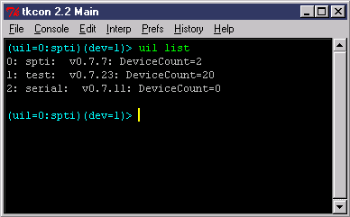

| uil | count | |
| uil | create | |
| uil | get | autosense |
| uil | get | callback |
| uil | get | index |
| uil | get | version |
| uil | info | |
| uil | list | |
| uil | load | |
| uil | message | |
| uil | name | |
| uil | parse | |
| uil | remove | |
| uil | set | autosense |
| uil | set | callback |
| uil | set | index |
| uil | set | loglevel |
Below is a list of current uil translators (2/15/2002), and their function:
| Name | Interface | Platform(s) | Card Support | Hot Swap? | Low Level? | Queueing? | High Speed? |
|---|---|---|---|---|---|---|---|
| sg | FCAL/SCSI | Linux | Generic HBA | Yes | No* | Yes | Yes |
| Serial | Serial | Linux, Win9x, WinNT | COM Port | Yes | Yes | No | No |
| Test | None | Linux, Win9x | None | No | No | No | Yes |
| ASPI | FCAL/SCSI | Win9x, WinNT | Generic HBA | No | No | No | Yes |
| SPTI | FCAL/SCSI | WinNT | Generic HBA | Yes* | No | No | Yes |
| iTech | FCAL/SCSI | WinNT | iTech Custom | Yes | Yes | Yes | No* |
| Safari | TCP/IP Custom | WinNT | "Work.exe" | NA | No | No | No |
| SimSCSI | TCP/IP SCSI SIM | WinNT | "Work.exe" | NA | Yes | Yes | No |
uil listFor example:

In this case, Niagara has three uil translators loaded. Note the
index, version, and number of devices connected. To change the current
uil, use the command uil set index
(usi is a shortname alias). The format
for this command is:
uil set index <index>You can also create new UIL's and remove UIL's dynamically. The command to create a new uil is:
uil create <driver name> ?option1? ?option2? ?...?Here are some examples:
uil create testNote the parameter we passed to the simscsi driver in the last example tells simscsi to start work.exe automatically. Parameters after the uil name in the examples above are different depending on which driver being loaded (most drivers have no startup parameters). Parameters are always optional, if not included the driver will load with a default configuration. In most cases, it is ok to have multiple instances of the same uil type. To remove a uil translator, the command is:
uil create itech
uil create spti
uil create simscsi
uil create simscsi 1
uil remove <uil index>If the simscsi driver automatically launched work.exe, it will automatically kill it when this command is called.